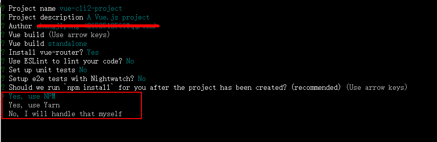
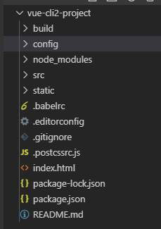

原文连接:https://www.cnblogs.com/hgdzjp/p/11756689.html
前言：
vue脚手架指的是vue-cli它是vue官方提供的一个快速构建单页面（SPA）环境配置的工具，cli 就是(command-line-interface ) 命令行界面 。vue-cli是基于node环境利用webpack对文件进行编译、打包、压缩、es6转es5等一系列操作。目前vue-cli已经升级到了3.0版本，3.0所需的webpack版本是4.xxx，2.0版本目前也很流行,2.0所需的webpack版本是3.xxx，我们来讲讲两者的配置：
Vue2.0：
一.安装node.js环境:
去node官网下载node.js并安装(http://nodejs.cn/download/)。安装完成后可以在终端执行 node -v查看node 是否安装成功，下图是安装成功的提示，显示出当前安装的node的版本号。
二.全局安装webpack：
为了在其他任何目录下都能使用到webpack，进行全局安装，执行npm install webpack@3.12.0 -g 命令，npm 是Node集成的工具 npm install 是从github上下载webpack最新的包，“@3.12.0”表示安装指定的版本，因为现在已经升级到了4.0版本，如果不指定版本版本号就会安装最新的版本，同时vue-cli2需要的是3.xxx的版本，所以我们指定了一个固定版本，如果不指定则不需要，"-g" 全称是 " global (全局) " 表示全局安装。检查是否安装成功终端执行“webpack -v”或者"webpack --version"，如果显示具体的版本号则表示安装成功。
三.全局安装 vue-cli2:
执行“npm install @vue/cli -g”命令进行安装。“npm install @vue/cli -g” 命令是脚手架3的，“npm install vue-cli -g”命令才是脚手架3的，脚手架2和脚手架3是不相同的，如果现在使用 “npm install vue-cli -g”命令进行安装的话，下次使用脚手架3的时候就得卸载脚手架2，安装脚手架3，为了减少不必要的操作我们执行 “npm install @vue/cli -g ” 命令进行安装，然后再执行 “npm install @vue-cli-init -g ” 将脚手架2下载下来，在此环境下既可以安装脚手架2的模板，有可以安装脚手架3的模板。 检查是否安装成功终端执行“vue -V”或者"vue --version"，如果显示具体的版本号则表示安装成功。具体安装方式查看官网（https://cli.vuejs.org/zh/）。
四.初始化项目：
进入到自己要安装项目的文件夹目录，我这里是 “D:\webpackProject\vue-cli2> ” 执行 “vue init webpack vue-cli2-project ” 命令，出现如下图提示 ，“vue-cli2-project” 是我们的项目文件夹的名字，就是最终显示在index.html中的title标签里和package.json中的，也可以自己进行修改，我们一般不会去改，直接按回车键进行下一步。
“? Project description (A Vue.js project)” 是项目的描述，自己可以修改或者使用默认的，我们一般使用默认的直接按回车键进行下一步，
这里是作者的信息，我们使用默认的，直接下一步，
这里有两个选项：Runtime + Compiler 和Runtime-only ，Runtime-only要比Runtime + Compiler 轻大约6KB,而且效率要高， 按上下键可以进行选择，默认是第一个，选择好后按回车键进行下一步，
这一步是询问是否使用vue-router（路由），因为在项目中我们会用到所以这里按Y 键，进行下一步，
这一步是询问是否使用ESLint（语法检查器），ES (ecscript) 即 javascript ,lint 限制的意思，也就是 javascript语法限制器，使得你的语法更加规范，如果你的语法不规范编辑器就会报错，你可能在开发过程中因为一个空格导致语法不规范进而报错（其实你的代码没有问题的），所以对于初学者不建议使用此语法，所以我们选择 n，并进行下一步操作，
这一步是询问是否使用单元测试，这个用的人比较少，所以我们不适用，输入n并进行一下步，
这一步询问是否要进行e2e(端到端测试)，是一个自动化测试的框架，这里我们就不使用了，直接输入n，进行下一步:

这里询问我们管理项目是用npm 还是yarn ，这里我们使用npm ,直接回车，接下来就是等待安装node_modules。下图表示安装完成：
执行 cd vue-cli2-project 进入到我们的项目目录下，然后执行 npm run dev 命令进行启动我们的项目，下图是我们的项目目录：

五、 项目目录介绍：
1、build 文件夹：webpack的一些相关配置；
2、config 文件夹：项目开发环境和生产环境的一些相关配置；
3、node_modules 文件夹 ：这里存放的是安装包，比如webpack、第三方插件库、项目的依赖文件；
4、src 文件夹：我们将要写的代码放在这里面，打包上线时会进行编译、压缩等操作。
5、static 文件夹：这里存放的是一些静态文件比如图片、css文件、不需要进行压缩的js文件，打包时这个文件夹将原封不动的放到dist（打包时自动生产的文件夹）文件夹下面。
6、.babelrc 文件：ES6语法编译配置，主要是将ES 转成ES 需要适配那些浏览器
7、.editorconfig 文件：定义代码格式，对代码的风格进行一个统一。
8、.gitignore 文件：git上传需要忽略的文件格式
9、 .postcssrc.js 文件：postcss配置文件
10、 index.html 文件：要进行访问的首页面
11、package-lock.json 文件：锁定依赖模块和子模块的版本号
12、package.json 文件：项目基本信息,包依赖信息等
13、README.md 文件：项目说明文件
文件详解：
1、package.json 文件：当我们在命令行时 npm run dev 的时候程序执行的是package.json文件的“script”脚本里的“dev”命令；
这段代码的意思是启动 “webpack-dev-server” 服务器，“--inline” 是 重新加载改变的部分，不会刷新页面，--progress是启动项目时显示进度，“--config build/webpack.dev.conf.js” 是执行build下面的webpack.dev.conf.js配置文件。我们可以添加其他属性比如 “--open” 是启动项目后自动在浏览器打开项目，其它配置可以查看相关文档（https://www.webpackjs.com/configuration/dev-server/#devserver）。“start” 和“dev”的作用是一样的，“build” 的作用是执行 build下的build.js文件，将当前的项目进行打包。打包后生成一个dist文件夹，放在其里面。webpack.dev.conf.js文件是我们在开发环境下的webpack配置文件，打开次文件，内容如下：
2.、build/webpack.dev.conf.js 文件：
1 'use strict'
2 const utils = require('./utils') //引入的工具包
3 const webpack = require('webpack') //引入webpack包
4 const config = require('../config') //引入 config下的index.js文件
5 const merge = require('webpack-merge') //合并配置文件
6 const path = require('path') //node的path模块，对路径进行处理
7 const baseWebpackConfig = require('./webpack.base.conf') //将生产和开发环境下共用的配置文件进行了抽离形成了改文件
8 const CopyWebpackPlugin = require('copy-webpack-plugin') //拷贝插件
9 const HtmlWebpackPlugin = require('html-webpack-plugin') //加载html模块
10 const FriendlyErrorsPlugin = require('friendly-errors-webpack-plugin') //友好的错误提示插件
11 const portfinder = require('portfinder') //在当前机器上找一个可打开的端口号，默认是8080,如果端口号被占用则重新寻找可打开的端口号。
12
13 const HOST = process.env.HOST
14 const PORT = process.env.PORT && Number(process.env.PORT)
15
16 const devWebpackConfig = merge(baseWebpackConfig, { //利用merge插件将 baseWebpackConfig 配置与当前配置进行合并
17 module: {
18 rules: utils.styleLoaders({ sourceMap: config.dev.cssSourceMap, usePostCSS: true }) //引入utils中一些css-loader和postcss-loader
19 },
20
21 devtool: config.dev.devtool, //控制是否生成以及如何生成源码映射，这里引入的是config下的index.js的 “devtool: 'cheap-module-eval-source-map'”,
22
23 // these devServer options should be customized in /config/index.js
24 // dev-server的配置
25 devServer: {
26 clientLogLevel: 'warning', //当使用inline mode，devTools的命令行中将会显示一些调试信息
27 historyApiFallback: { //当使用 HTML5 History API 时，任意的 404 响应都可能需要被替代为 index.html
28 rewrites: [
29 { from: /.*/, to: path.posix.join(config.dev.assetsPublicPath, 'index.html') },
30 ],
31 },
32 hot: true, //启用 webpack 的模块热替换特性
33 contentBase: false, // since we use CopyWebpackPlugin.
34 compress: true,
35 host: HOST || config.dev.host, //要开启的域名，可在package.json中的“dev”命令中进行配置
36 port: PORT || config.dev.port, //要开启的端口号，可在package.json中的“dev”命令中进行配置
37 open: config.dev.autoOpenBrowser,//是否自动在浏览器中打开，可在package.json中的“dev”命令中进行配置
38 overlay: config.dev.errorOverlay
39 ? { warnings: false, errors: true }
40 : false,
41 publicPath: config.dev.assetsPublicPath, //
42 proxy: config.dev.proxyTable, //当出现跨域时设置代理，这里引入了config下的index.js的配置
43 quiet: true, // necessary for FriendlyErrorsPlugin 启用 quiet 后，除了初始启动信息之外的任何内容都不会被打印到控制台。这也意味着来自 webpack 的错误或警告在控制台不可见
44 watchOptions: {
45 poll: config.dev.poll,
46 }
47 },
48 plugins: [ //插件部分
49 new webpack.DefinePlugin({ //配置全局变量
50 'process.env': require('../config/dev.env')
51 }),
52 new webpack.HotModuleReplacementPlugin(), // 模块热替换它允许在运行时更新各种模块，而无需进行完全刷新
53 new webpack.NamedModulesPlugin(), // HMR shows correct file names in console on update.
54 new webpack.NoEmitOnErrorsPlugin(), // 这个插件的作用是在热加载时直接返回更新文件名，而不是文件的id。
55 // https://github.com/ampedandwired/html-webpack-plugin
56 new HtmlWebpackPlugin({ //打包时生成index.html并且自动加载app.js文件 <!-- built files will be auto injected -->
57 filename: 'index.html',
58 template: 'index.html',
59 inject: true
60 }),
61 // copy custom static assets
62 new CopyWebpackPlugin([
63 {
64 from: path.resolve(__dirname, '../static'), //将static整个文件夹原封不动地拷贝到dist目录下。
65 to: config.dev.assetsSubDirectory,
66 ignore: ['.*']
67 }
68 ])
69 ]
70 })
71
72 module.exports = new Promise((resolve, reject) => {
73 portfinder.basePort = process.env.PORT || config.dev.port //获取当前的端口号
74 portfinder.getPort((err, port) => {
75 if (err) {
76 reject(err)
77 } else {
78 // publish the new Port, necessary for e2e tests
79 process.env.PORT = port
80 // add port to devServer config
81 devWebpackConfig.devServer.port = port
82
83 // Add FriendlyErrorsPlugin
84 devWebpackConfig.plugins.push(new FriendlyErrorsPlugin({
85 compilationSuccessInfo: {
86 messages: [`Your application is running here: http://${devWebpackConfig.devServer.host}:${port}`],
87 },
88 onErrors: config.dev.notifyOnErrors
89 ? utils.createNotifierCallback()
90 : undefined
91 }))
92
93 resolve(devWebpackConfig)
94 }
95 })
96 })本文件 的核心就是将webpack.base.conf.js的配置（公共配置）与本文件配置进行合并，再看一下 webpack.base.conf.js 文件：
3、build/webpack.base.conf.js 文件
1 'use strict'
2 const path = require('path') //node的path模块，对路径进行处理
3 const utils = require('./utils') //引入的工具包
4 const config = require('../config')//引入 config下的index.js文件
5 const vueLoaderConfig = require('./vue-loader.conf') //根据NODE_ENV这个变量分析是否是生产环境，然后根据不同的环境来加载，判断是否开启了sourceMap的功能
6
7 function resolve (dir) {
8 return path.join(__dirname, '..', dir) //对路径进行处理，获取到绝对路径
9 }
10
11
12
13 module.exports = {
14 context: path.resolve(__dirname, '../'), //对路径进行处理，跳到当前项目的根目录下
15 entry: { //入口文件，即项目要引入哪个js文件
16 app: './src/main.js' //因为 context 中已经跳到了当前项目的根目录下，所以这里的路径是以 ./src 开头
17 },
18 output: { //输出文件，即项目要输出到哪里去
19 path: config.build.assetsRoot, //输出到根目录下的dist问价夹里，具体地址可以在config下的index.js中进行修改
20 filename: '[name].js', //以文件的原始名输出
21 publicPath: process.env.NODE_ENV === 'production' //根据process.env.NODE_ENV 来判断是生产模式还是开发模式，将最终打包的项目要放到服务器的什么地方，默认是 '/' 即服务器的根目录下。
22 ? config.build.assetsPublicPath
23 : config.dev.assetsPublicPath
24 },
25 resolve: {
26 extensions: ['.js', '.vue', '.json'], //简化一些文件名，引入文件时可以不带后缀名
27 alias: {
28 'vue$': 'vue/dist/vue.esm.js',
29 '@': resolve('src'), //简化文件的引入问题，如：本文件中要引入 src下的common里的demo.js，你就可以这样引入：@/common/demo.js
30 }
31 },
32 module: {
33
34 rules: [
35 // 配置各种loader，来处理对应的文件
36 {
37 test: /\.vue$/, //使用vue-loader处理以.vue结束的文件
38 loader: 'vue-loader',
39 options: vueLoaderConfig
40 },
41 {
42 test: /\.js$/, //使用babel-loader处理以.js结束的文件，即js文件
43 loader: 'babel-loader',
44 include: [resolve('src'), resolve('test'), resolve('node_modules/webpack-dev-server/client')]
45 },
46 {
47 test: /\.(png|jpe?g|gif|svg)(\?.*)?$/, //使用url-loader处理各种格式的图片资源，最大限制10000KB,这里不处理src同级目录下的static里的图片。
48 loader: 'url-loader',
49 options: {
50 limit: 10000,
51 name: utils.assetsPath('img/[name].[hash:7].[ext]') //将处理后的放在img文件下，并且加上7位hash值。
52 }
53 },
54 {
55 test: /\.(mp4|webm|ogg|mp3|wav|flac|aac)(\?.*)?$/, //使用url-loader处理视频文件。
56 loader: 'url-loader',
57 options: {
58 limit: 10000,
59 name: utils.assetsPath('media/[name].[hash:7].[ext]')
60 }
61 },
62 {
63 test: /\.(woff2?|eot|ttf|otf)(\?.*)?$/, //使用url-loader处理字体文件。
64 loader: 'url-loader',
65 options: {
66 limit: 10000,
67 name: utils.assetsPath('fonts/[name].[hash:7].[ext]')
68 }
69 }
70 ]
71 },
72 node: {
73 // prevent webpack from injecting useless setImmediate polyfill because Vue
74 // source contains it (although only uses it if it's native).
75 setImmediate: false,
76 // prevent webpack from injecting mocks to Node native modules
77 // that does not make sense for the client
78 dgram: 'empty',
79 fs: 'empty',
80 net: 'empty',
81 tls: 'empty',
82 child_process: 'empty'
83 }
84 }主要的说明已经注释在了文件中，这个问价的主要配置有entry（入口文件）、output（输出文件）、loader ，这些都是必备的，而一些plugins（插件）已经在对应的环境文件（webpack.dev.config.js、webpack.prod.config.js）中进行了配置，再看一下webpack.prod.config.js文件：
4、build/webpack.prod.config.js：
1 'use strict'
2 const path = require('path')
3 const utils = require('./utils')
4 const webpack = require('webpack')
5 const config = require('../config')
6 const merge = require('webpack-merge')
7 const baseWebpackConfig = require('./webpack.base.conf')
8 const CopyWebpackPlugin = require('copy-webpack-plugin')
9 const HtmlWebpackPlugin = require('html-webpack-plugin')
10 const ExtractTextPlugin = require('extract-text-webpack-plugin') //抽离css样式,防止将样式打包在js中引起页面样式加载错乱的现象
11 const OptimizeCSSPlugin = require('optimize-css-assets-webpack-plugin')//主要是用来压缩css文件
12 const UglifyJsPlugin = require('uglifyjs-webpack-plugin') //对js文件进行压缩
13
14 const env = require('../config/prod.env')
15
16 const webpackConfig = merge(baseWebpackConfig, {
17 module: {
18 rules: utils.styleLoaders({
19 sourceMap: config.build.productionSourceMap,
20 extract: true,
21 usePostCSS: true
22 })
23 },
24 devtool: config.build.productionSourceMap ? config.build.devtool : false,
25 output: {
26 path: config.build.assetsRoot,
27 filename: utils.assetsPath('js/[name].[chunkhash].js'),
28 chunkFilename: utils.assetsPath('js/[id].[chunkhash].js')
29 },
30 plugins: [
31 // http://vuejs.github.io/vue-loader/en/workflow/production.html
32 new webpack.DefinePlugin({
33 'process.env': env
34 }),
35 new UglifyJsPlugin({
36 uglifyOptions: { //配置项
37 compress: {
38 warnings: false
39 }
40 },
41 sourceMap: config.build.productionSourceMap, //使用sourceMap将错误消息位置映射到模块(这会减慢编译速度)。
42 parallel: true //启用/禁用多进程并行运行，启用后会提高构建速度
43 }),
44
45 new ExtractTextPlugin({
46 filename: utils.assetsPath('css/[name].[contenthash].css'),
47
48 allChunks: true,
49 }),
50 // Compress extracted CSS. We are using this plugin so that possible
51 // duplicated CSS from different components can be deduped.
52 new OptimizeCSSPlugin({
53 cssProcessorOptions: config.build.productionSourceMap
54 ? { safe: true, map: { inline: false } } //判断是否生成内联映射，如果生成则会生成一个source-map文件
55 : { safe: true }
56 }),
57 // generate dist index.html with correct asset hash for caching.
58 // you can customize output by editing /index.html
59 // see https://github.com/ampedandwired/html-webpack-plugin
60 new HtmlWebpackPlugin({
61 filename: config.build.index, //将会生成一个index.html文件，放到dist文件下
62 template: 'index.html',
63 inject: true, //将所有js资源放在body标签的底部
64 minify: { //控制是否进行压缩
65 removeComments: true, //删除所有的注释
66 collapseWhitespace: true, //折叠构成文档树中文本节点的空白
67 removeAttributeQuotes: true //尽可能删除属性周围的引号
68 // more options:
69 // https://github.com/kangax/html-minifier#options-quick-reference
70 },
71 // necessary to consistently work with multiple chunks via CommonsChunkPlugin
72 chunksSortMode: 'dependency' //允许控制块在包含到HTML之前按照依赖排序
73 }),
74 // keep module.id stable when vendor modules does not change
75 new webpack.HashedModuleIdsPlugin(), //该插件会根据模块的相对路径生成一个四位数的hash作为模块id, 建议用于生产环境。
76 // enable scope hoisting
77 new webpack.optimize.ModuleConcatenationPlugin(),//启用作用域提升，让代码文件更小、运行的更快
78 // split vendor js into its own file
79 new webpack.optimize.CommonsChunkPlugin({ //主要是用来提取第三方库和公共模块，避免首屏加载的bundle文件或者按需加载的bundle文件体积过大，从而导致加载时间过长
80 name: 'vendor',
81 minChunks (module) {
82 // any required modules inside node_modules are extracted to vendor
83 return (
84 module.resource &&
85 /\.js$/.test(module.resource) &&
86 module.resource.indexOf(
87 path.join(__dirname, '../node_modules')
88 ) === 0
89 )
90 }
91 }),
92 // extract webpack runtime and module manifest to its own file in order to
93 // prevent vendor hash from being updated whenever app bundle is updated
94 new webpack.optimize.CommonsChunkPlugin({
95 name: 'manifest',
96 minChunks: Infinity
97 }),
98 // This instance extracts shared chunks from code splitted chunks and bundles them
99 // in a separate chunk, similar to the vendor chunk
100 // see: https://webpack.js.org/plugins/commons-chunk-plugin/#extra-async-commons-chunk
101 new webpack.optimize.CommonsChunkPlugin({
102 name: 'app',
103 async: 'vendor-async',
104 children: true,
105 minChunks: 3
106 }),
107
108 // copy custom static assets
109 new CopyWebpackPlugin([ //复制模块
110 {
111 from: path.resolve(__dirname, '../static'),
112 to: config.build.assetsSubDirectory,
113 ignore: ['.*']
114 }
115 ])
116 ]
117 })
118
119 if (config.build.productionGzip) {
120 const CompressionWebpackPlugin = require('compression-webpack-plugin')
121
122 webpackConfig.plugins.push(
123 new CompressionWebpackPlugin({
124 asset: '[path].gz[query]',
125 algorithm: 'gzip',
126 test: new RegExp(
127 '\\.(' +
128 config.build.productionGzipExtensions.join('|') +
129 ')$'
130 ),
131 threshold: 10240,
132 minRatio: 0.8
133 })
134 )
135 }
136
137 if (config.build.bundleAnalyzerReport) {
138 const BundleAnalyzerPlugin = require('webpack-bundle-analyzer').BundleAnalyzerPlugin
139 webpackConfig.plugins.push(new BundleAnalyzerPlugin())
140 }
141
142 module.exports = webpackConfig当我们执行 npm run build 打包时执行的是: build下的build.js文件，build.js中引入了webpack.prod.config.js，因此build.js才是生产环境所需的webpack文件。
5、build/build.js:
1 'use strict'
2 require('./check-versions')() //该文件用于检测node和npm的版本，实现版本依赖
3
4 process.env.NODE_ENV = 'production'
5
6 const ora = require('ora') //在node端加载动画模块
7 const rm = require('rimraf') //用来删除文件和文件夹的
8 const path = require('path')
9 const chalk = require('chalk') //修改控制台中字符串的样式
10 const webpack = require('webpack')
11 const config = require('../config')
12 const webpackConfig = require('./webpack.prod.conf')
13
14 const spinner = ora('building for production...') //设置一个动画的内容为 "building for production..."
15 spinner.start() //加载动画
16
17 rm(path.join(config.build.assetsRoot, config.build.assetsSubDirectory), err => { //利用 rm 模块先删除dist文件再生成新文件，因为有时候会使用hash来命名，删除整个文件可避免冗余
18 if (err) throw err
19 webpack(webpackConfig, (err, stats) => { //将一下配置内容与 webpack.prod.conf.js中的配置进行合并
20 spinner.stop() //停止动画
21 if (err) throw err
22 process.stdout.write(stats.toString({
23 colors: true,
24 modules: false,
25 children: false, // If you are using ts-loader, setting this to true will make TypeScript errors show up during build.
26 chunks: false,
27 chunkModules: false
28 }) + '\n\n')
29
30 if (stats.hasErrors()) {
31 console.log(chalk.red(' Build failed with errors.\n'))
32 process.exit(1)
33 }
34
35 console.log(chalk.cyan(' Build complete.\n'))
36 console.log(chalk.yellow(
37 ' Tip: built files are meant to be served over an HTTP server.\n' +
38 ' Opening index.html over file:// won\'t work.\n'
39 ))
40 })
41 })6、build/check-versions.js: 检测node和npm的版本，实现版本依赖
1 'use strict'
2 // 该文件用于检测node和npm的版本，实现版本依赖
3 const chalk = require('chalk') //node.js中的模块，作用是修改控制台中字符串的样式
4 const semver = require('semver') //node.js中的模块，对版本进行检查
5 const packageConfig = require('../package.json') //引入page.json文件
6 const shell = require('shelljs')
7
8 function exec (cmd) {
9 //通过child_process模块的新建子进程，执行 Unix 系统命令后转成没有空格的字符串
10 return require('child_process').execSync(cmd).toString().trim()
11 }
12
13 const versionRequirements = [
14 {
15 name: 'node',
16 currentVersion: semver.clean(process.version), //使用semver格式化版本
17 versionRequirement: packageConfig.engines.node //获取package.json中设置的node版本
18 }
19 ]
20
21 if (shell.which('npm')) {
22 versionRequirements.push({
23 name: 'npm',
24 currentVersion: exec('npm --version'), //自动调用npm --version命令，并且把参数返回给exec函数，从而获取纯净的版本号
25 versionRequirement: packageConfig.engines.npm
26 })
27 }
28
29 module.exports = function () {
30 const warnings = []
31
32 for (let i = 0; i < versionRequirements.length; i++) {
33 const mod = versionRequirements[i]
34
35 if (!semver.satisfies(mod.currentVersion, mod.versionRequirement)) {
36 //如果上面的版本号不符合package.json文件中指定的版本号，就执行下面错误提示的代码
37 warnings.push(mod.name + ': ' +
38 chalk.red(mod.currentVersion) + ' should be ' +
39 chalk.green(mod.versionRequirement)
40 )
41 }
42 }
43
44 if (warnings.length) {
45 console.log('')
46 console.log(chalk.yellow('To use this template, you must update following to modules:'))
47 console.log()
48
49 for (let i = 0; i < warnings.length; i++) {
50 const warning = warnings[i]
51 console.log(' ' + warning)
52 }
53
54 console.log()
55 process.exit(1)
56 }
57 }
7、build/vue-loader.conf.js:
1 'use strict'
2
3 //根据NODE_ENV这个变量分析是否是生产环境，然后根据不同的环境来加载，判断是否开启了sourceMap的功能。方便之后在cssLoaders中加上sourceMap功能。然后判断是否设置了cacheBusting属性，
4 // 它指的是缓存破坏，特别是进行sourceMap debug时，设置成false是非常有帮助的。最后就是一个转化请求的内容，video、source、img、image等的属性进行配置。具体的还是需要去了解vue-loader这个
5 // webpack的loader加载器
6
7 const utils = require('./utils')
8 const config = require('../config')
9 const isProduction = process.env.NODE_ENV === 'production'
10 const sourceMapEnabled = isProduction
11 ? config.build.productionSourceMap
12 : config.dev.cssSourceMap
13 //处理项目中的css文件，生产环境和测试环境默认是打开sourceMap，而extract中的提取样式到单独文件只有在生产环境中才需要
14 module.exports = {
15 loaders: utils.cssLoaders({
16 sourceMap: sourceMapEnabled,
17 extract: isProduction
18 }),
19 cssSourceMap: sourceMapEnabled,
20 cacheBusting: config.dev.cacheBusting,
21 transformToRequire: {//在模版编译过程中，编译器可以将某些属性，如 src 路径，转换为require调用，以便目标资源可以由 webpack 处理.
22 video: ['src', 'poster'],
23 source: 'src',
24 img: 'src',
25 image: 'xlink:href'
26 }
27 }8、build/utils:
1 'use strict'
2 const path = require('path')
3 const config = require('../config')
4 const ExtractTextPlugin = require('extract-text-webpack-plugin') ////抽离css样式,防止将样式打包在js中引起页面样式加载错乱的现象
5 const packageConfig = require('../package.json')
6
7
8 //导出文件的位置，根据环境判断开发环境和生产环境，为config文件中index.js文件中定义的build.assetsSubDirectory或
9 exports.assetsPath = function (_path) {
10 const assetsSubDirectory = process.env.NODE_ENV === 'production'
11 ? config.build.assetsSubDirectory
12 : config.dev.assetsSubDirectory
13
14 return path.posix.join(assetsSubDirectory, _path)
15 }
16
17 //使用了css-loader和postcssLoader，通过options.usePostCSS属性来判断是否使用postcssLoader中压缩等方法
18 exports.cssLoaders = function (options) { //导出css-loader
19 options = options || {}
20
21 const cssLoader = {
22 loader: 'css-loader',
23 options: {
24 sourceMap: options.sourceMap
25 }
26 }
27
28 const postcssLoader = {
29 loader: 'postcss-loader',
30 options: {
31 sourceMap: options.sourceMap
32 }
33 }
34
35 // generate loader string to be used with extract text plugin
36 function generateLoaders (loader, loaderOptions) {
37 const loaders = options.usePostCSS ? [cssLoader, postcssLoader] : [cssLoader] //根据传入的参数判断是使用cssLoader、 postcssLoader还是只使用 cssLoader
38
39 if (loader) {
40 loaders.push({
41 loader: loader + '-loader',
42 options: Object.assign({}, loaderOptions, { //将后面的两个对象合并后再进行复制
43 sourceMap: options.sourceMap
44 })
45 })
46 }
47
48 // Extract CSS when that option is specified
49 // (which is the case during production build)
50 if (options.extract) {
51 return ExtractTextPlugin.extract({
52 use: loaders,
53 fallback: 'vue-style-loader'
54 })
55 } else {
56 return ['vue-style-loader'].concat(loaders)
57 }
58 }
59
60 // https://vue-loader.vuejs.org/en/configurations/extract-css.html
61 return {
62 css: generateLoaders(),
63 postcss: generateLoaders(),
64 less: generateLoaders('less'),
65 sass: generateLoaders('sass', { indentedSyntax: true }),
66 scss: generateLoaders('sass'),
67 stylus: generateLoaders('stylus'),
68 styl: generateLoaders('stylus')
69 }
70 }
71
72 // Generate loaders for standalone style files (outside of .vue)
73 exports.styleLoaders = function (options) {
74 const output = []
75 const loaders = exports.cssLoaders(options)
76
77 for (const extension in loaders) {
78 const loader = loaders[extension]
79 output.push({
80 test: new RegExp('\\.' + extension + '$'),
81 use: loader
82 })
83 }
84
85 return output
86 }
87
88 exports.createNotifierCallback = () => {
89 const notifier = require('node-notifier')
90
91 return (severity, errors) => {
92 if (severity !== 'error') return
93
94 const error = errors[0]
95 const filename = error.file && error.file.split('!').pop()
96
97 notifier.notify({
98 title: packageConfig.name,
99 message: severity + ': ' + error.name,
100 subtitle: filename || '',
101 icon: path.join(__dirname, 'logo.png')
102 })
103 }
104 }9、config/index.js: 生产 和 开发 环境下webpack的公共配置文件
1 const path = require('path')
2
3 module.exports = {
4 dev: { //开发环境下的配置
5
6 // Paths
7 assetsSubDirectory: 'static', //子目录，一般存放css,js,image等文件
8 assetsPublicPath: '/', //根目录
9 proxyTable: {}, //在这里使用代理解决跨越问题
10
11 // Various Dev Server settings
12 host: 'localhost', // 域名
13 port: 8080, // 开启的端口号，默认是8080
14 autoOpenBrowser: true, //是否自动打开浏览器
15 errorOverlay: true, //浏览器错误提示
16 notifyOnErrors: true, //跨平台错误提示
17 poll: false, // 使用文件系统(file system)获取文件改动的通知devServer.watchOptions
18
19
20 /**
21 * Source Maps
22 */
23
24 // https://webpack.js.org/configuration/devtool/#development
25 devtool: 'cheap-module-eval-source-map',//增加调试，该属性为原始源代码（仅限行）不可在生产环境中使用
26
27 cacheBusting: true,//使缓存失效
28
29 cssSourceMap: true //代码压缩后进行调bug定位将非常困难，于是引入sourcemap记录压缩前后的位置信息记录，当产生错误时直接定位到未压缩前的位置，将大大的方便我们调试
30 },
31
32 build: { //生产发环境下的配置
33 // Template for index.html
34 index: path.resolve(__dirname, '../dist/index.html'), //index.html编译后生成的位置和名字
35
36 // Paths
37 assetsRoot: path.resolve(__dirname, '../dist'),//编译后存放生成环境代码的位置
38 assetsSubDirectory: 'static', //js,css,images存放文件夹名
39 assetsPublicPath: '/', //发布的根目录，通常本地打包dist后打开文件会报错，此处修改为./。如果是上线的文件，可根据文件存放位置进行更改路径
40
41 productionSourceMap: true,
42
43 devtool: '#source-map',
44
45 productionGzip: false,
46 productionGzipExtensions: ['js', 'css'],
47
48 bundleAnalyzerReport: process.env.npm_config_report
49 }
50 }10、config/dev.env.js:
1 'use strict'
2 // 当在开发环境下引用（webpack.dev.config.js中的plugin中）的是此文件，次文件指定了 开发模式: node-env ,
3 //利用merge方法将prod.env.js与本文件进行合并，在开发模式下输出 NODE_ENV="development"
4
5 //webpack.dev.config.js中的plugin引用如下:
6 // new webpack.DefinePlugin({
7 // 'process.env': require('../config/dev.env')
8 // })
9 const merge = require('webpack-merge')
10 const prodEnv = require('./prod.env')
11 module.exports = merge(prodEnv, {
12 NODE_ENV: '"development"'
13 })11、config/prod.env.js:
1 'use strict'
2 // 在生产模式下调用此文件
3 // 在webpack.prod.config.js中的plugin中引用如下:
4 //const env = require('../config/prod.env')
5 // new webpack.DefinePlugin({
6 // 'process.env': env
7 // }),
8 module.exports = {
9 NODE_ENV: '"production"'
10 }12 、node_modules文件夹：该文件夹下存放的是node的一些依赖模块，比如:require模块、path模块、http-proxy-middleware模块，还有一些我们通过npm安装的插件模块，比如vue、md5、vue-cli、ivew等。
13.、src文件夹： 该文件夹下面存放的是我们项目代码以及一些文件，components文件夹存放了我们自己写的组件，router文件夹里面存放了路由配置，mian.js是整个项目的入口js，在build文件夹下的webpack.dev.config.js中的entry中有配置（

1 const fs = require('fs')
2 const path = require('path')
3 const debug = require('debug')
4 const chalk = require('chalk')
5 const readPkg = require('read-pkg')
6 const merge = require('webpack-merge')
7 const Config = require('webpack-chain')
8 const PluginAPI = require('./PluginAPI')
9 const dotenv = require('dotenv')
10 const dotenvExpand = require('dotenv-expand')
11 const defaultsDeep = require('lodash.defaultsdeep')
12 const { warn, error, isPlugin, resolvePluginId, loadModule } = require('@vue/cli-shared-utils')
13
14 const { defaults, validate } = require('./options')
15
16 module.exports = class Service {
17 constructor (context, { plugins, pkg, inlineOptions, useBuiltIn } = {}) {
18 process.VUE_CLI_SERVICE = this
19 this.initialized = false
20 this.context = context
21 this.inlineOptions = inlineOptions
22 this.webpackChainFns = []
23 this.webpackRawConfigFns = []
24 this.devServerConfigFns = []
25 this.commands = {}
26 // Folder containing the target package.json for plugins
27 this.pkgContext = context
28 // package.json containing the plugins
29 this.pkg = this.resolvePkg(pkg)
30 // If there are inline plugins, they will be used instead of those
31 // found in package.json.
32 // When useBuiltIn === false, built-in plugins are disabled. This is mostly
33 // for testing.
34 this.plugins = this.resolvePlugins(plugins, useBuiltIn)
35 // pluginsToSkip will be populated during run()
36 this.pluginsToSkip = new Set()
37 // resolve the default mode to use for each command
38 // this is provided by plugins as module.exports.defaultModes
39 // so we can get the information without actually applying the plugin.
40 this.modes = this.plugins.reduce((modes, { apply: { defaultModes }}) => {
41 return Object.assign(modes, defaultModes)
42 }, {})
43 }
44
45 resolvePkg (inlinePkg, context = this.context) {
46 if (inlinePkg) {
47 return inlinePkg
48 } else if (fs.existsSync(path.join(context, 'package.json'))) {
49 const pkg = readPkg.sync({ cwd: context })
50 if (pkg.vuePlugins && pkg.vuePlugins.resolveFrom) {
51 this.pkgContext = path.resolve(context, pkg.vuePlugins.resolveFrom)
52 return this.resolvePkg(null, this.pkgContext)
53 }
54 return pkg
55 } else {
56 return {}
57 }
58 }
59
60 init (mode = process.env.VUE_CLI_MODE) {
61 if (this.initialized) {
62 return
63 }
64 this.initialized = true
65 this.mode = mode
66
67 // load mode .env
68 if (mode) {
69 this.loadEnv(mode)
70 }
71 // load base .env
72 this.loadEnv()
73
74 // load user config
75 const userOptions = this.loadUserOptions()
76 this.projectOptions = defaultsDeep(userOptions, defaults())
77
78 debug('vue:project-config')(this.projectOptions)
79
80 // apply plugins.
81 this.plugins.forEach(({ id, apply }) => {
82 if (this.pluginsToSkip.has(id)) return
83 apply(new PluginAPI(id, this), this.projectOptions)
84 })
85
86 // apply webpack configs from project config file
87 if (this.projectOptions.chainWebpack) {
88 this.webpackChainFns.push(this.projectOptions.chainWebpack)
89 }
90 if (this.projectOptions.configureWebpack) {
91 this.webpackRawConfigFns.push(this.projectOptions.configureWebpack)
92 }
93 }
94
95 loadEnv (mode) {
96 const logger = debug('vue:env')
97 const basePath = path.resolve(this.context, `.env${mode ? `.${mode}` : ``}`)
98 const localPath = `${basePath}.local`
99
100 const load = envPath => {
101 try {
102 const env = dotenv.config({ path: envPath, debug: process.env.DEBUG })
103 dotenvExpand(env)
104 logger(envPath, env)
105 } catch (err) {
106 // only ignore error if file is not found
107 if (err.toString().indexOf('ENOENT') < 0) {
108 error(err)
109 }
110 }
111 }
112
113 load(localPath)
114 load(basePath)
115
116 // by default, NODE_ENV and BABEL_ENV are set to "development" unless mode
117 // is production or test. However the value in .env files will take higher
118 // priority.
119 if (mode) {
120 // always set NODE_ENV during tests
121 // as that is necessary for tests to not be affected by each other
122 const shouldForceDefaultEnv = (
123 process.env.VUE_CLI_TEST &&
124 !process.env.VUE_CLI_TEST_TESTING_ENV
125 )
126 const defaultNodeEnv = (mode === 'production' || mode === 'test')
127 ? mode
128 : 'development'
129 if (shouldForceDefaultEnv || process.env.NODE_ENV == null) {
130 process.env.NODE_ENV = defaultNodeEnv
131 }
132 if (shouldForceDefaultEnv || process.env.BABEL_ENV == null) {
133 process.env.BABEL_ENV = defaultNodeEnv
134 }
135 }
136 }
137
138 setPluginsToSkip (args) {
139 const skipPlugins = args['skip-plugins']
140 const pluginsToSkip = skipPlugins
141 ? new Set(skipPlugins.split(',').map(id => resolvePluginId(id)))
142 : new Set()
143
144 this.pluginsToSkip = pluginsToSkip
145 }
146
147 resolvePlugins (inlinePlugins, useBuiltIn) {
148 const idToPlugin = id => ({
149 id: id.replace(/^.\//, 'built-in:'),
150 apply: require(id)
151 })
152
153 let plugins
154
155 const builtInPlugins = [
156 './commands/serve',
157 './commands/build',
158 './commands/inspect',
159 './commands/help',
160 // config plugins are order sensitive
161 './config/base',
162 './config/css',
163 './config/prod',
164 './config/app'
165 ].map(idToPlugin)
166
167 if (inlinePlugins) {
168 plugins = useBuiltIn !== false
169 ? builtInPlugins.concat(inlinePlugins)
170 : inlinePlugins
171 } else {
172 const projectPlugins = Object.keys(this.pkg.devDependencies || {})
173 .concat(Object.keys(this.pkg.dependencies || {}))
174 .filter(isPlugin)
175 .map(id => {
176 if (
177 this.pkg.optionalDependencies &&
178 id in this.pkg.optionalDependencies
179 ) {
180 let apply = () => {}
181 try {
182 apply = require(id)
183 } catch (e) {
184 warn(`Optional dependency ${id} is not installed.`)
185 }
186
187 return { id, apply }
188 } else {
189 return idToPlugin(id)
190 }
191 })
192 plugins = builtInPlugins.concat(projectPlugins)
193 }
194
195 // Local plugins
196 if (this.pkg.vuePlugins && this.pkg.vuePlugins.service) {
197 const files = this.pkg.vuePlugins.service
198 if (!Array.isArray(files)) {
199 throw new Error(`Invalid type for option 'vuePlugins.service', expected 'array' but got ${typeof files}.`)
200 }
201 plugins = plugins.concat(files.map(file => ({
202 id: `local:${file}`,
203 apply: loadModule(`./${file}`, this.pkgContext)
204 })))
205 }
206
207 return plugins
208 }
209
210 async run (name, args = {}, rawArgv = []) {
211 // resolve mode
212 // prioritize inline --mode
213 // fallback to resolved default modes from plugins or development if --watch is defined
214 const mode = args.mode || (name === 'build' && args.watch ? 'development' : this.modes[name])
215
216 // --skip-plugins arg may have plugins that should be skipped during init()
217 this.setPluginsToSkip(args)
218
219 // load env variables, load user config, apply plugins
220 this.init(mode)
221
222 args._ = args._ || []
223 let command = this.commands[name]
224 if (!command && name) {
225 error(`command "${name}" does not exist.`)
226 process.exit(1)
227 }
228 if (!command || args.help || args.h) {
229 command = this.commands.help
230 } else {
231 args._.shift() // remove command itself
232 rawArgv.shift()
233 }
234 const { fn } = command
235 return fn(args, rawArgv)
236 }
237
238 resolveChainableWebpackConfig () {
239 const chainableConfig = new Config()
240 // apply chains
241 this.webpackChainFns.forEach(fn => fn(chainableConfig))
242 return chainableConfig
243 }
244
245 resolveWebpackConfig (chainableConfig = this.resolveChainableWebpackConfig()) {
246 if (!this.initialized) {
247 throw new Error('Service must call init() before calling resolveWebpackConfig().')
248 }
249 // get raw config
250 let config = chainableConfig.toConfig()
251 const original = config
252 // apply raw config fns
253 this.webpackRawConfigFns.forEach(fn => {
254 if (typeof fn === 'function') {
255 // function with optional return value
256 const res = fn(config)
257 if (res) config = merge(config, res)
258 } else if (fn) {
259 // merge literal values
260 config = merge(config, fn)
261 }
262 })
263
264 // #2206 If config is merged by merge-webpack, it discards the __ruleNames
265 // information injected by webpack-chain. Restore the info so that
266 // vue inspect works properly.
267 if (config !== original) {
268 cloneRuleNames(
269 config.module && config.module.rules,
270 original.module && original.module.rules
271 )
272 }
273
274 // check if the user has manually mutated output.publicPath
275 const target = process.env.VUE_CLI_BUILD_TARGET
276 if (
277 !process.env.VUE_CLI_TEST &&
278 (target && target !== 'app') &&
279 config.output.publicPath !== this.projectOptions.publicPath
280 ) {
281 throw new Error(
282 `Do not modify webpack output.publicPath directly. ` +
283 `Use the "publicPath" option in vue.config.js instead.`
284 )
285 }
286
287 if (typeof config.entry !== 'function') {
288 let entryFiles
289 if (typeof config.entry === 'string') {
290 entryFiles = [config.entry]
291 } else if (Array.isArray(config.entry)) {
292 entryFiles = config.entry
293 } else {
294 entryFiles = Object.values(config.entry || []).reduce((allEntries, curr) => {
295 return allEntries.concat(curr)
296 }, [])
297 }
298
299 entryFiles = entryFiles.map(file => path.resolve(this.context, file))
300 process.env.VUE_CLI_ENTRY_FILES = JSON.stringify(entryFiles)
301 }
302
303 return config
304 }
305
306 loadUserOptions () {
307 // vue.config.js
308 let fileConfig, pkgConfig, resolved, resolvedFrom
309 const configPath = (
310 process.env.VUE_CLI_SERVICE_CONFIG_PATH ||
311 path.resolve(this.context, 'vue.config.js')
312 )
313 if (fs.existsSync(configPath)) {
314 try {
315 fileConfig = require(configPath)
316
317 if (typeof fileConfig === 'function') {
318 fileConfig = fileConfig()
319 }
320
321 if (!fileConfig || typeof fileConfig !== 'object') {
322 error(
323 `Error loading ${chalk.bold('vue.config.js')}: should export an object or a function that returns object.`
324 )
325 fileConfig = null
326 }
327 } catch (e) {
328 error(`Error loading ${chalk.bold('vue.config.js')}:`)
329 throw e
330 }
331 }
332
333 // package.vue
334 pkgConfig = this.pkg.vue
335 if (pkgConfig && typeof pkgConfig !== 'object') {
336 error(
337 `Error loading vue-cli config in ${chalk.bold(`package.json`)}: ` +
338 `the "vue" field should be an object.`
339 )
340 pkgConfig = null
341 }
342
343 if (fileConfig) {
344 if (pkgConfig) {
345 warn(
346 `"vue" field in package.json ignored ` +
347 `due to presence of ${chalk.bold('vue.config.js'